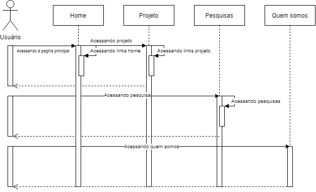
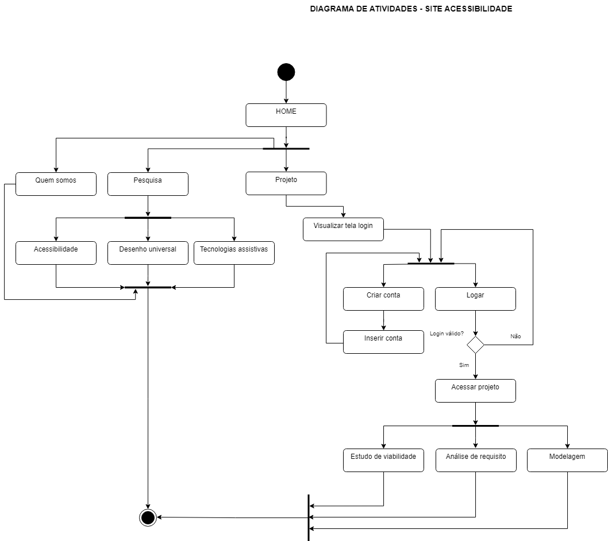

O que é Diagrama de Caso de Uso:
• Falando sobre a Linguagem de modelagem unificada (UML), o diagrama de caso de uso deixa claro os detalhes dos usuários do seu programa, e as interações com o sistema. Para criar um, use um conjunto de símbolos e conectores específicos.
• Caso de uso: Formato oval na horizontal e que representam os diferentes usos que um usuário pode ter.
• Atores: Bonecos palito, representando as pessoas que realmente implementam os casos de uso.
• Associações: Uma linha entre atores e casos de uso. Nos diagramas complexos, é importante saber quais atores estão associados a quais casos de uso.
• Include: Quando o caso de uso A “inclui” o caso de uso B, significa que sempre que o caso de uso A for executado o caso de uso B também será executado. A direção do relacionamento é do caso de uso que está incluindo para o caso de uso incluído.
• Extend: Quando o caso de uso B estende o caso de uso A, significa que quando o caso de uso A for executado o caso de uso B poderá (poderá – talvez não seja) ser executado também. A direção do relacionamento é do caso de uso extensor (aqui o caso de uso B) para o caso de uso estendido (aqui o caso de uso A).
O que é Diagrama de Sequencia:
•

O que é Diagrama de Atividade:
• Diagramas de atividade ajudam a unir as pessoas das áreas de negócios e de desenvolvimento de uma organização para entender o mesmo processo e comportamento. Para criar um diagrama de atividade, é necessário um conjunto de símbolos especiais, incluindo aqueles para dar partida, encerrar, fundir ou receber etapas no fluxo — o qual abordaremos de forma mais aprofundada neste guia de diagramas de atividade.
• Atividades: As atividades descrevem os processos de negócios e incluem nós de atividade e bordas de atividades, permitindo que as tarefas fluam ao longo de uma sequência.
• Nós iniciais: O nó inicial fica no início do diagrama; ele representa o ponto de início da atividade.
• Decisões: Uma decisão é um ponto do diagrama em que o usuário ou o software tem que fazer uma escolha. Cada opção leva a uma nova ramificação, portanto, a decisão é composta de uma entrada e pelo menos duas saídas.
• Nós finais: O nó final é a etapa final da atividade. A conclusão do nó final indica que a atividade também foi concluída.
• Fork ou Join: O uso do tipo Fork se dá para dividir o fluxo do diagrama em atividades paralelas, ou seja, que serão executadas em modo concorrente. Esta função é uma das que tornam este diagrama tão dinâmico e flexível. O outro tipo de sincronização, o Join, é utilizado para unir as atividades que estão correndo em paralelo, seguindo assim em apenas um fluxo. Simplificando um pouco mais o entendimento deste elemento, o Fork faz a divisão das atividades e o Join faz a sincronização das mesmas.

O que é Diagrama de Classes:
• É possível ver no diagrama de classe o relacionamento da tabela
user passando pela conexão até o banco de dados. Dentro da tabela user tem-se as variáveis
id, senha, nome, e email, que permite o cadastro do usuário.

Referências bibliográficas:
• https://www.lucidchart.com/pages/pt/o-que-e-diagrama-de-atividades-uml